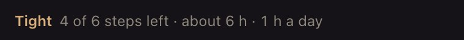
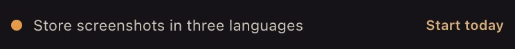
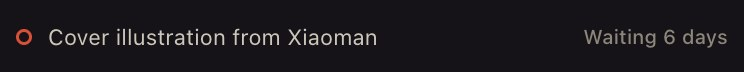
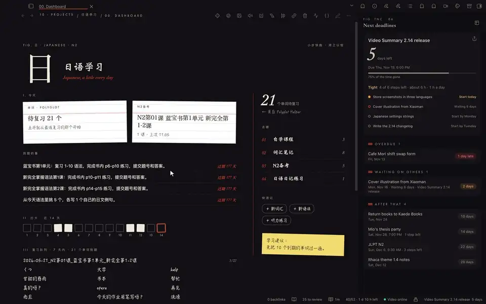

Next deadlineVideo Summary 2.14 releaseDue Thu · 18:00
75% of the time gone
Days left is the easy part. Can you still make it?
TaskNotes Countdown reads the deadlines and steps you already keep in TaskNotes, and answers the questions a countdown leaves open.
-
Row 01Pace
Tight. Four steps, about six hours, five days. It turns amber when the pace is more than the hours you said you can give.

-
Row 02Start by
Every step gets a latest start day: its due date, minus a buffer, minus the work it still needs. The ones that should start today are marked.

-
Row 03Waiting on
Steps marked as waiting count the days, so you know whom to nudge before it becomes your problem.

-
Row 04Share
The share button draws the plan as a card in your theme's colours and copies it, ready for a chat or a post.
The same board, beside whatever you are working on.

tasknotes-countdown block puts the nearest few in your daily note.- Read-onlyIt never changes a task and stores nothing beyond its settings.
- No account, no networkEverything is read from the TaskNotes you already have, on your device.
- Light at startupNothing is read while Obsidian starts; tasks are read once when TaskNotes is ready.